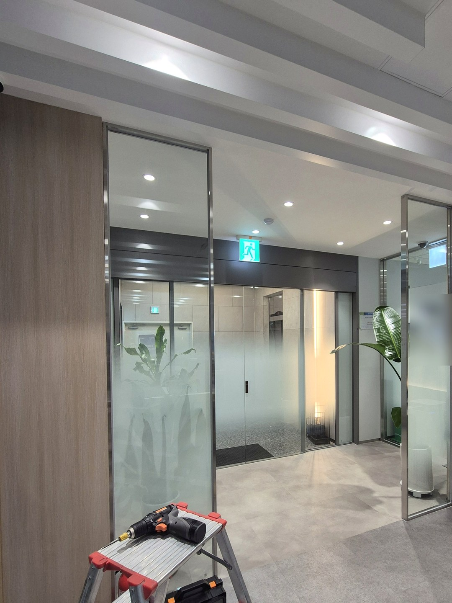
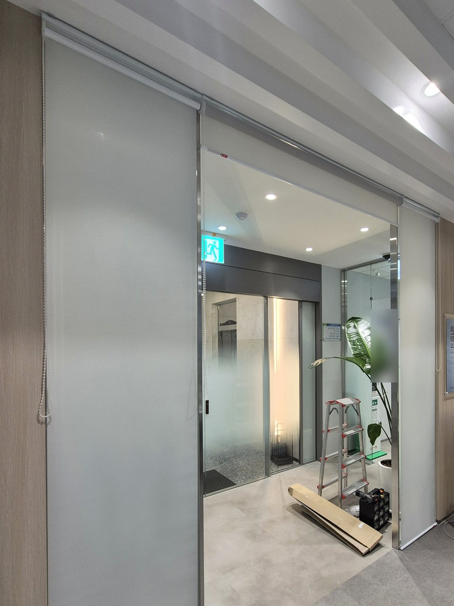
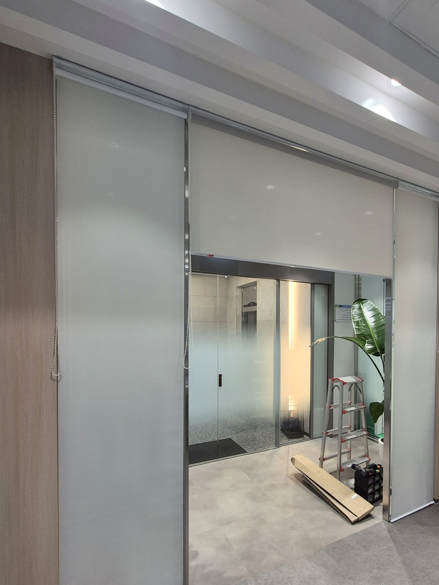
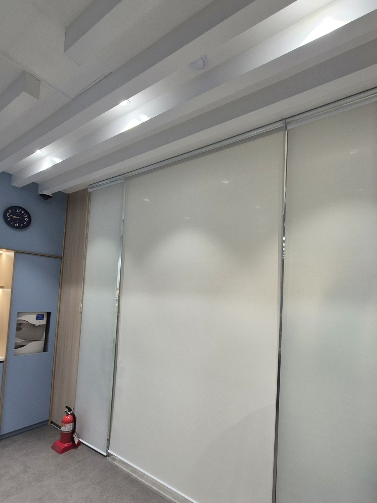
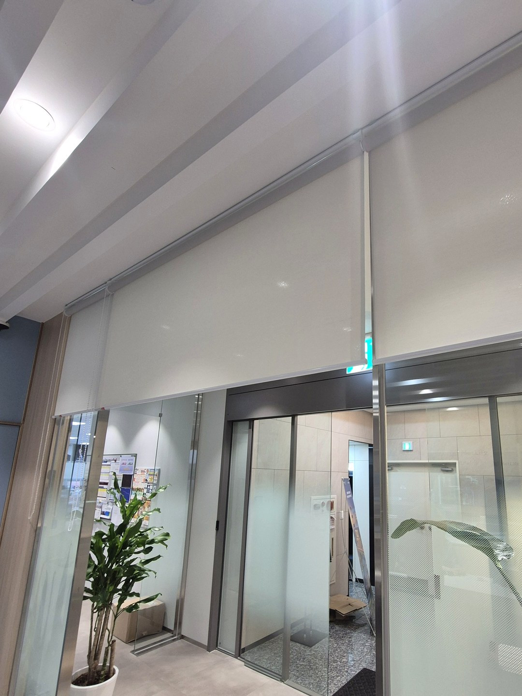
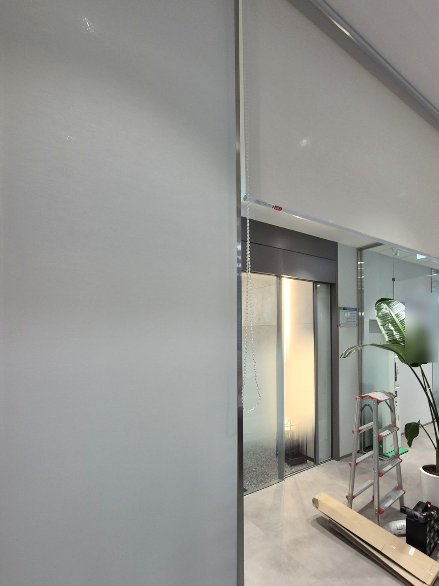

2026년 10월 1일 시공
안동 보험사 사무실
유리 칸막이 롤스크린 시공후기

안동의 보험사 사무실에서 진행한 롤스크린 시공입니다.
이 현장은 경기도에 있는 업체에서 실측과 시공을 함께 의뢰해 주셨습니다.
현장을 직접 보고 치수를 잰 뒤, 그 치수로 제작해 설치까지 마쳤습니다.
시공 전 — 유리로 트인 경계

사무 공간과 입구 쪽을 나누는 면이 통유리와 열린 통로로 이루어져 있었습니다.
유리 칸막이는 공간을 답답하지 않게 나눠 주지만, 시선까지 막아 주지는 못합니다.
가리고 싶을 때만 가릴 수 있도록, 유리 앞쪽 천장 보에 롤스크린을 올렸습니다.
폭이 다른 세 칸으로 나눈 까닭

이 면은 유리 한 장, 통로, 다시 유리 한 장 순서로 구성되어 있고 세 구간의 폭이 모두 다릅니다.
롤스크린을 구간마다 한 대씩, 모두 세 대로 나눈 것은 그 구성을 그대로 따른 결과입니다.
통로 구간만 걷어 올리면 사람은 평소처럼 오가고, 양쪽 유리는 가려진 상태로 둘 수 있습니다.

통째로 한 대만 달았다면 출입할 때마다 넓은 원단 전체를 움직여야 합니다.
구간을 나누면 한 대가 감당하는 폭이 줄어 움직임도 가볍습니다.
밝은 원단을 쓴 자리

원단은 흰색에 가까운 밝은 색입니다.
천장과 바닥이 모두 밝은 사무실이어서, 내린 상태에서도 벽면이 하나 더 생긴 것처럼 자연스럽게 이어집니다.
건너편 조명은 원단에 부드럽게 번져 보이고, 사람이나 집기의 윤곽은 드러나지 않습니다.

세 대의 윗선은 천장 보를 따라 한 줄로 맞췄습니다.
높이가 어긋나면 내렸을 때 아랫단이 들쭉날쭉해 보이기 때문에, 설치할 때 가장 공을 들이는 부분입니다.
미리 알려 드리는 것

롤스크린을 여러 대로 나누면 대와 대 사이에 간격이 생깁니다.
원단을 감는 통 양 끝에 부속이 달려 있어, 원단 폭이 제품 전체 폭보다 조금 좁기 때문입니다.
빈틈없이 가려야 하는 용도라면 이 간격을 먼저 따져 보셔야 합니다.
이번 현장에서는 간격이 유리 프레임과 겹치도록 위치를 잡았습니다.
프레임 뒤로 간격이 숨어 정면에서는 크게 드러나지 않습니다.
다른 지역 업체의 현장 의뢰
현장이 대구·경북에 있는데 업체는 멀리 계신 경우, 실측과 시공만 따로 맡기실 수 있습니다.
이번에도 경기도 업체를 대신해 안동 현장의 실측과 설치를 맡았습니다.
치수를 잰 쪽에서 설치까지 맡기 때문에, 전달 과정에서 숫자가 달라질 일이 줄어듭니다.
이런 방식의 협업은 인테리어·시공사 제휴 안내에 정리해 두었습니다.
안동 사무실 블라인드 상담
유리 칸막이나 창 전체가 나오는 사진과 대략적인 폭·높이를 보내 주십시오.
몇 칸으로 나누는 것이 좋을지, 통로는 어떻게 처리할지 함께 정해 드립니다.
안동은 경북 담당 실장이 직접 실측하고 설치합니다.
비슷한 시공